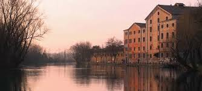

Preistoria
Le prime tracce della presenza degli uomini lungo il Sile risalgono al VI millennio a.C. A quell' epoca si possono infatti far risalire i reperti di industria litica portati alla luce. Sono principalmente reperti dell'Età del bronzo ( 1800-900 a.C.) ad essere stati ritrovati con maggior frequenza lungo tutto il corso del fiume. Il deterioramento del clima provocò alluvioni e il conseguente impaludamento di vaste aree. La penetrazione nella nostra zona di un popolo ( i Veneti antichi, o paleoveneti) portò una nuova tecnologia metallurgica che sconvolse la precedente civiltà del bronzo. Questo periodo si vuole definire come età del ferro.
Eta Romana
L'archeologia sottolinea l'importanza del Sile sia nella nascita di Treviso sia nel suo successivo sviluppo.
Attraverso questo corso d'acqua navigabile la città aveva la possibilità di affacciarsi sulla laguna veneta e il mare, collegandosi direttamente con
l'importante scalo Altinum. Altino, attraverso il facile e costante corso del Sile, poteva offrire a Treviso prodotti del mare, del commercio e
dell'industria. A sua volta Treviso diventava, grazie al suo fiume, il centro di raccolta e di traffico dei prodotti del territorio circostante verso
le coste.
Con la fine della presenza di Roma nel Veneto al ruolo primario del Sile quale via d'acqua, si aggiungerà una nuova e importante funzione: quella di forza
motrice per i mulini. La scoperta dei mulini idraulici infatti, pur risalendo all'età romana ebbe piena diffusione solo a partire dall'Alto medioevo,
quando le braccia iniziarono a scarseggiare, soprattutto quelle gratuite degli schiavi che furono alla base della potenza economica di Roma.
Treviso, oltre a sorgere nel punto in cui il fiume inizia ad essere navigabile, poteva contemporaneamente utilizzare al suo interno, per far girare le macine,
la gran massa d'acqua dei cagnani che confluiscono nel Sile. Furono principalmente questi fattori geografici a farne quell'importante città che è stata nel
Medioevo.
A Treviso era infatti possibile portare a compimento il ciclo del grano proveniente dalla campagna circostante ed il cui possesso è sempre stato sinonimo
di potere.
Già nel VI sec. d.C. i Goti fecero della città un centro importante della loro amministrazione militare e politica tanto che posero qui un pubblico
deposito di grano, che, con quello di Trento, doveva provvedere tutta la parte orientale dell'Italia superiore in tempo di carestia.
A fianco dell'attività economico-commerciale ferveva quella culturale. Basta ricordare l'opera di Tomaso da Modena che in città dipinse le Storie di S.
Orsola nella chiesa di S. Margherita, la sala del capitolo dei Domenicani , Colonne e pareti della chiesa di S. Nicolò. Una serie di pittori minori
affrescarono inoltre le case dei signorotti locali.
Saranno i veneziani ad assicurarsi il definitivo dominio sulla Marca Trevigiana ; nel '500 una poderosa opera di fortificazione trasformava ancora una volta
la città : tra l'altro, tutt'attorno le nuove mura, una spianata profonda 500 metri poteva venir allagata, utilizzando le acque del Sile e dei suoi affluenti,
con un eccezionale effetto difensivo. La navigabilità del fiume fu compromessa dall' abbassamento del livello dell' acqua e dai sempre più frequenti scavi di
ghiaia e sabbia nella zona di Casier ; il porto cittadino fu spostato a valle e il movimento discendente cesso quasi completamenta alla meta dell '800.
All'immediato dopoguerra ( 1945-47 ) risale l'unico vero grande progetto di rilancio commerciale di Treviso legato al Sile; il progetto di un grande porto
fluviale e di una annessa vasta zona industriale fu quasi sul punto di essere realizzato.Di tutto il progetto le uniche opere ultimate furono il taglio e la
centrale idroelettrica. Così nasce l'isola di Villapendola.....ma questa è un'altra storia.
Visualizza maggiori informazione sull'eta romana.